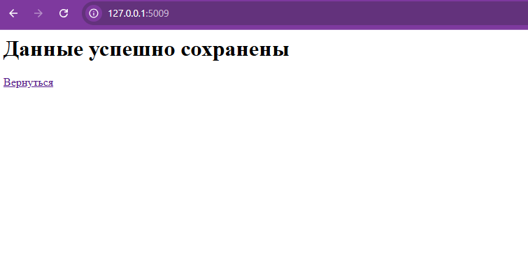
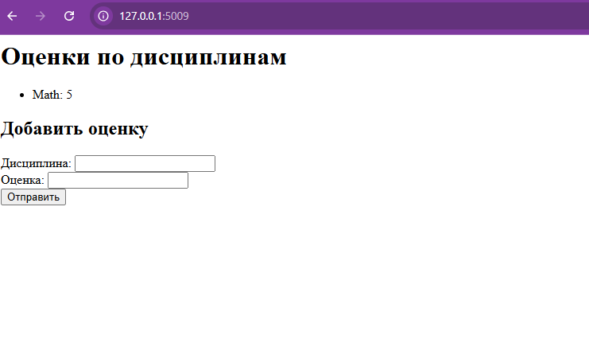

Задание 5
Написать простой веб-сервер для обработки GET и POST HTTP-запросов с помощью библиотеки socket в Python.
Задание:
Сервер должен: Принять и записать информацию о дисциплине и оценке по дисциплине. Отдать информацию обо всех оценках по дисциплинам в виде HTML-страницы.
Код сервера
import socket
import sys
class MyHTTPServer:
def __init__(self, host='127.0.0.1', port=8080, server_name="MyServer"):
self._host = host
self._port = port
self._server_name = server_name
self._grades = {}
def serve_forever(self):
serv_sock = socket.socket(socket.AF_INET, socket.SOCK_STREAM)
serv_sock.setsockopt(socket.SOL_SOCKET, socket.SO_REUSEADDR, 1)
try:
serv_sock.bind((self._host, self._port))
serv_sock.listen()
print(f"{self._server_name} running on {self._host}:{self._port}")
while True:
conn, _ = serv_sock.accept()
self.serve_client(conn)
finally:
serv_sock.close()
def serve_client(self, conn):
try:
req = self.parse_request(conn)
resp = self.handle_request(req)
self.send_response(conn, resp)
except Exception as e:
self.send_error(conn, e)
finally:
conn.close()
def parse_request(self, conn):
rfile = conn.makefile('r', encoding='utf-8')
request_line = rfile.readline().strip().split()
if len(request_line) != 3:
raise ValueError("Некорректный HTTP-запрос")
method, url, version = request_line
headers = {}
while True:
line = rfile.readline().strip()
if not line:
break
key, value = line.split(":", 1)
headers[key.strip()] = value.strip()
body = ''
if method.upper() == 'POST':
length = int(headers.get('Content-Length', 0))
body = rfile.read(length)
return {
'method': method.upper(),
'url': url,
'body': body
}
def handle_request(self, req):
method = req['method']
body = req['body']
if method == 'GET':
html = "<h1>Оценки по дисциплинам</h1><ul>"
for discipline, marks in self._grades.items():
avg = sum(marks) / len(marks)
html += f"<li>{discipline}: {marks} (среднее: {avg:.2f})</li>"
html += "</ul>"
html += """
<h2>Добавить оценку</h2>
<form method="POST">
Дисциплина: <input name="discipline"><br>
Оценка: <input name="mark"><br>
<input type="submit">
</form>
"""
return {'status': 200, 'reason': 'OK', 'body': html}
elif method == 'POST':
post_params = dict(
pair.split('=') for pair in body.split('&') if '=' in pair
)
discipline = post_params.get('discipline', 'Не указано')
mark = post_params.get('mark', '')
try:
mark = int(mark)
except:
return {
'status': 400,
'reason': 'Bad Request',
'body': '<h1>Оценка должна быть числом</h1>'
}
if discipline not in self._grades:
self._grades[discipline] = []
self._grades[discipline].append(mark)
return {
'status': 200,
'reason': 'OK',
'body': "<h1>Оценка добавлена</h1><a href='/'>Назад</a>"
}
else:
return {
'status': 405,
'reason': 'Method Not Allowed',
'body': '<h1>Метод не поддерживается</h1>'
}
def send_response(self, conn, resp):
body = resp['body']
status_line = f"HTTP/1.1 {resp['status']} {resp['reason']}\r\n"
headers = (
"Content-Type: text/html; charset=utf-8\r\n"
f"Content-Length: {len(body.encode('utf-8'))}\r\n\r\n"
)
conn.sendall(status_line.encode('utf-8'))
conn.sendall(headers.encode('utf-8'))
conn.sendall(body.encode('utf-8'))
def send_error(self, conn, err):
body = f"<h1>500 Internal Server Error</h1><p>{err}</p>"
response = (
"HTTP/1.1 500 Internal Server Error\r\n"
f"Content-Length: {len(body.encode('utf-8'))}\r\n\r\n"
+ body
)
conn.sendall(response.encode('utf-8'))
if __name__ == '__main__':
host = sys.argv[1] if len(sys.argv) > 1 else '127.0.0.1'
port = int(sys.argv[2]) if len(sys.argv) > 2 else 8080
name = sys.argv[3] if len(sys.argv) > 3 else "MyServer"
serv = MyHTTPServer(host, port, name)
try:
serv.serve_forever()
except KeyboardInterrupt:
print("\nServer stopped")
Сервер

Html-страница стартовая

Html-страница ввод данных

Html-страница данные сохранены

Html-страница отображение данных
